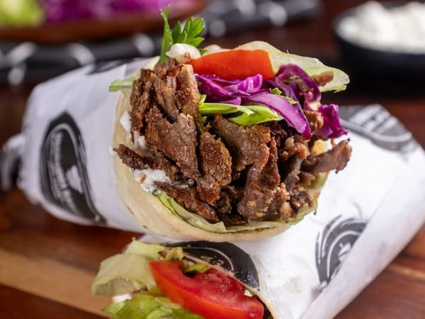
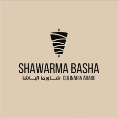
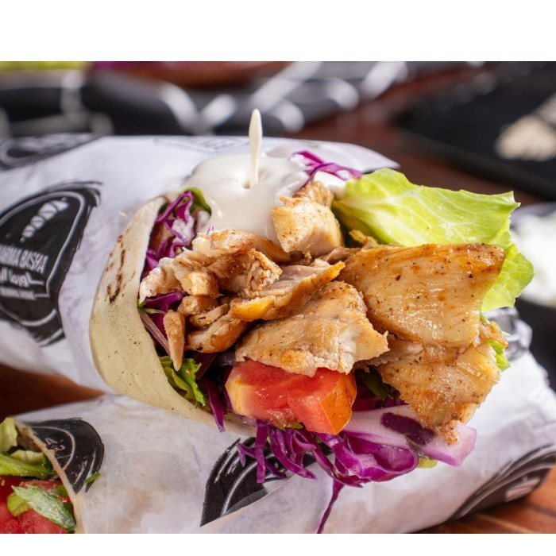
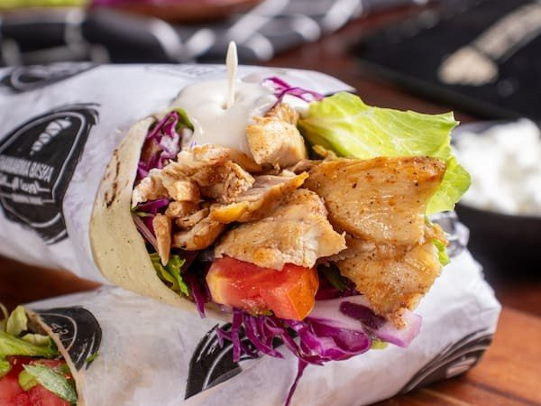
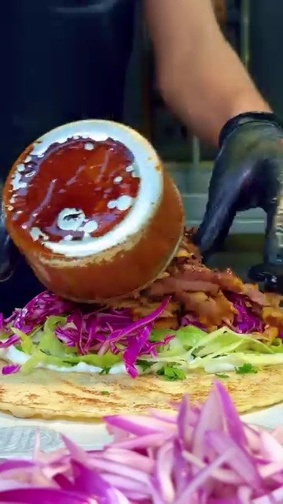
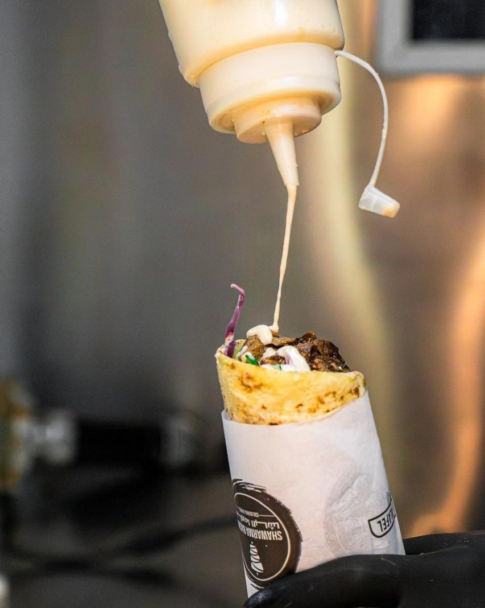
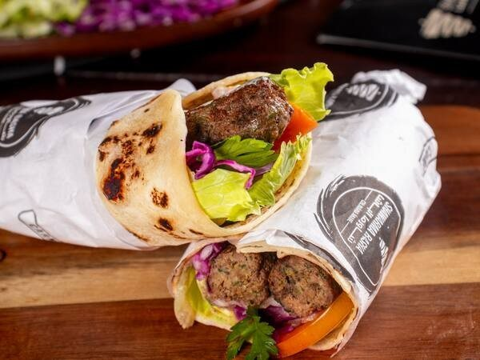
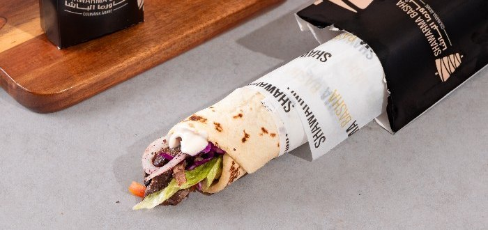
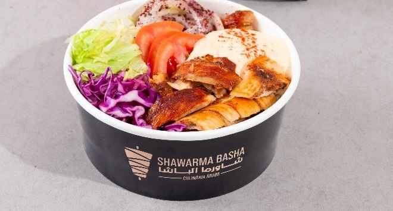

Shawarma
Carne
Carne bovina temperada com especiarias árabes, assada no espeto.
- No pão árabeR$ 40,00
- No bowl—não está no cardápio online
Início · O espeto
Shawarma (como a casa chama o kebab) de carne, frango ou misto, cortado do espeto vertical e servido no pão árabe ou no bowl.

No pão ou no bowl

Carne bovina temperada com especiarias árabes, assada no espeto.

Frango temperado com especiarias árabes, em fatias finas do espeto vertical.

Carne bovina e frango juntos, com salada, molho de alho e tahine.
Como é montado


O molho de alho é “à base de alho feito com iogurte natural”, como diz o cardápio. Sai a mais por R$ 3,00.
Kafta
“Carne bovina moída temperada à moda árabe na chapa servida no pão árabe”, com alface, tomate, cebola roxa, repolho roxo, salsa, molho de alho e tahine. R$ 35,00.

Combos


Dúvidas frequentes
Na casa, é o mesmo prato: o kebab é chamado pelo nome árabe, shawarma.
No cardápio online de hoje, o bowl vem de frango, misto ou falafel. Para outro pedido, pergunte pelo WhatsApp.
No combo “Kebab misto”, a casa descreve “carne de carneiro + frango”; no sanduíche misto, “carne bovina com frango”. Confirme na conversa.
Bateu a fome?
Monte o pedido aqui e mande pronto para o WhatsApp da casa, ou venha ao salão. A partir das 17h, todos os dias; confirme o horário de fechamento pelo WhatsApp.